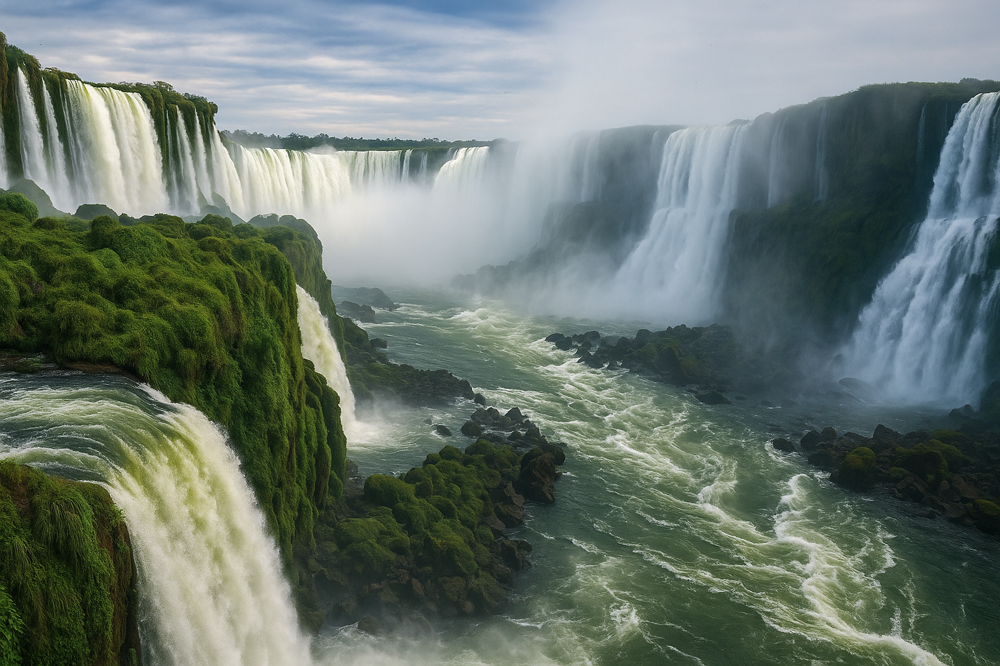

Conheça os lugares mais incríveis do Paraná, um estado que surpreende pela diversidade de paisagens, cultura e história em cada canto.
Um dos mais impressionantes espetáculos da natureza, com 275 quedas d'água que se estendem por quase 3 km no Rio Iguaçu.
Gruta com uma queda d'água interna, ideal para trilhas e contato com a natureza.

Cartão-postal de Curitiba, com estufa inspirada em cristal e jardins geométricos.
O ponto mais alto da Região Sul do Brasil, perfeito para trilhas e montanhismo.
Um dos passeios de trem mais bonitos do Brasil, atravessando a Serra do Mar.
Paraíso natural com praias tranquilas, trilhas, farol e fortalezas históricas.
Formações rochosas únicas, furnas e lagoas em Ponta Grossa.
Um dos parques mais bonitos de Curitiba, com mirantes, lagos e pôr do sol inesquecível.
Espaço cultural feito de estrutura metálica sobre um lago. Local de eventos e visitação.
Planeje seu orçamento com estas estimativas de custos para os principais destinos do Paraná.